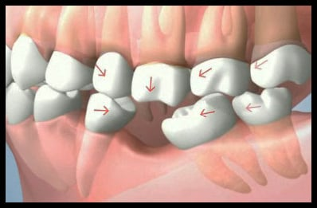

ماذا يحدث لعظام الفك بعد فقدان الأسنان؟

* صورة توضيحية لعملية ذوبان العظم تدريجياً بعد فقدان الأسنان
كثير من المرضى في مدينة إب يؤجلون تعويض الأسنان المفقودة لسنوات، ظناً منهم أن المشكلة تجميلية فقط. لكن الحقيقة العلمية تؤكد أن العظم الذي كان يسند السن يبدأ بـ "الضمور" فور فقدانه.
مخاطر إهمال الفراغات:
- تغير ملامح الوجه: انكماش العظم يؤدي لظهور التجاعيد حول الفم مبكراً.
- ميلان الأسنان المجاورة: تتحرك الأسنان السليمة نحو الفراغ مما يفسد الإطباق.
- صعوبة الزراعة مستقبلاً: كلما زاد التأخير، احتجنا لعمليات "زراعة عظم" معقدة قبل وضع السن.
💡 الحل الأمثل؟
تعتبر زراعة الأسنان هي الحل الوحيد الذي يحفز العظم ويمنعه من الانكماش، لأن الزرعة تعمل كجذر صناعي ينقل القوى الحيوية للفك كما يفعل السن الطبيعي تماماً.
لا تترك الفراغات تؤثر على شباب وجهك
تواصل معنا اليوم لفحص مستوى العظم وتحديد الخطة العلاجية المناسبة.
استشارة عبر واتساب